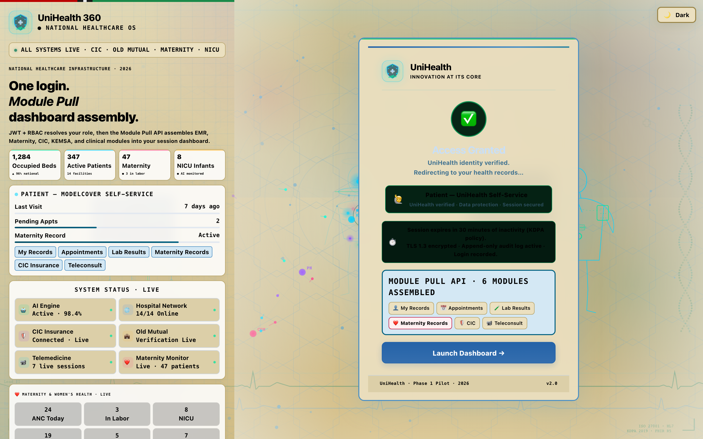
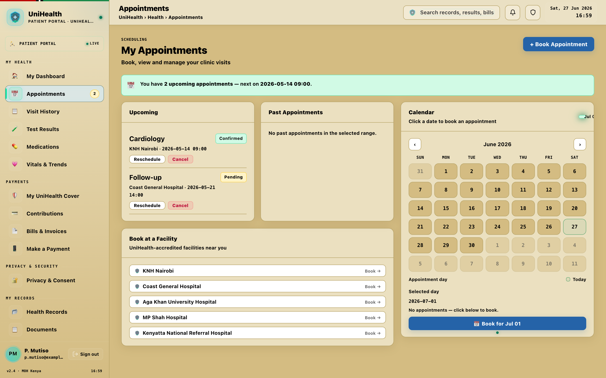
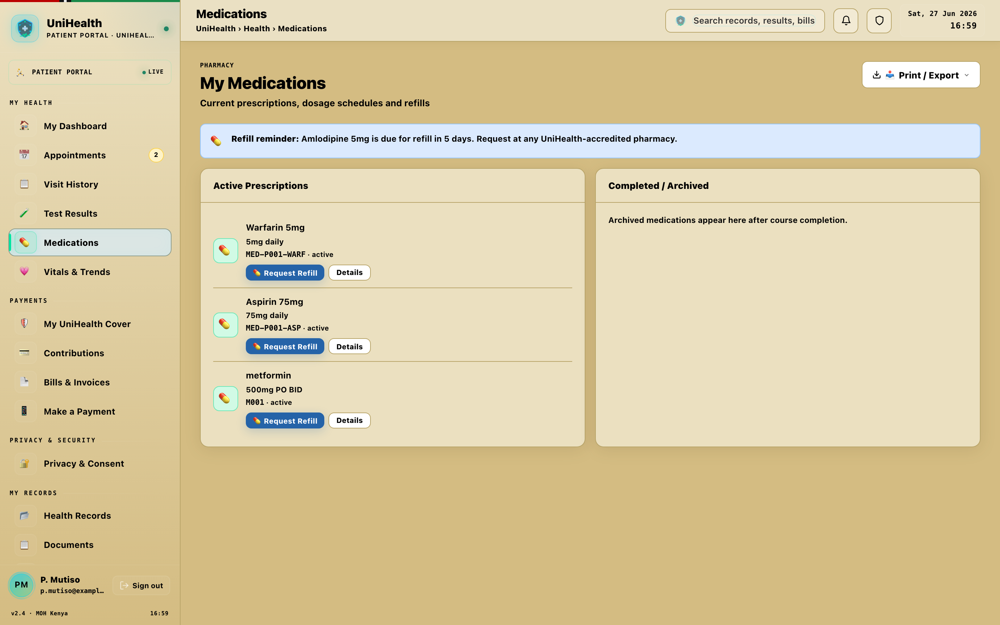
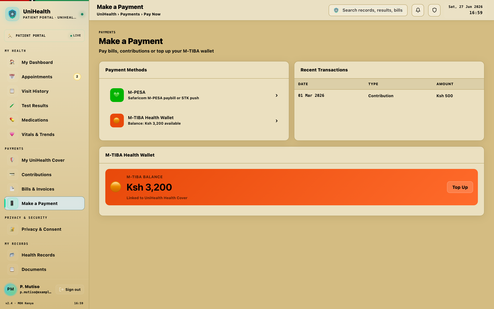
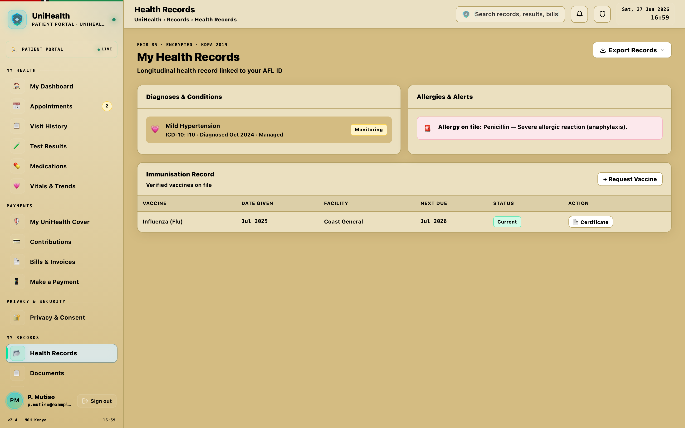
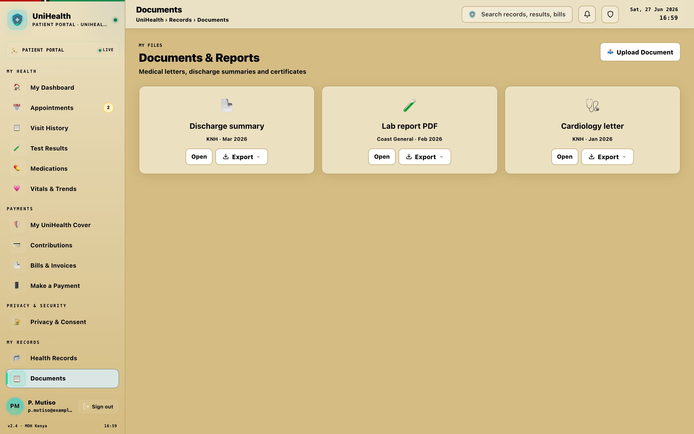
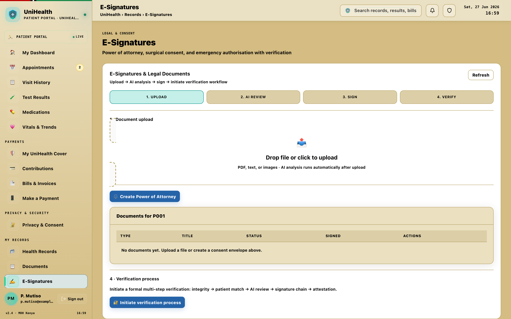
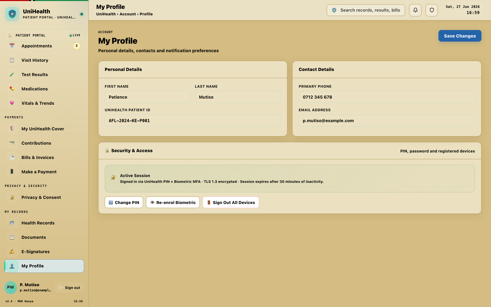

Patient Portal Manual
Self-service health records, appointments, results, payments, and privacy controls.
1. Sign-in — Patient
Patients sign in with national ID (or passport), UniHealth PIN, and mobile number — then SMS MFA.
Step 1 — Select role
The Patient tile opens the self-service health records portal. Scroll the carousel if needed.

The Patient tile opens the self-service health records portal. Scroll the carousel if needed.
Step 2 — Enter credentials
Enter your ID type and number, 4-digit UniHealth PIN, and registered mobile number (+254 format).

Enter your ID type and number, 4-digit UniHealth PIN, and registered mobile number (+254 format).
Step 3 — Verify MFA
Verify via SMS OTP sent to your registered phone. Demo: Practice 360 or OTP 123456.

Verify via SMS OTP sent to your registered phone. Demo: Practice 360 or OTP 123456.
Step 4 — Launch dashboard
Success confirms Patient — UniHealth Self-Service. Launch opens My Dashboard at /dashboard/patient.

Success confirms Patient — UniHealth Self-Service. Launch opens My Dashboard at /dashboard/patient.
2. Dashboard layout
The Patient Portal groups health, payments, privacy, and records in the sidebar.
| Zone | Purpose |
|---|---|
| My Health | Dashboard, appointments, visits, results, medications, vitals |
| Payments | Cover, contributions, bills, make a payment |
| Privacy & Security | KDPA consent controls |
| My Records | Health records, documents, e-sign, profile |
3. My Health tabs
My Dashboard

Personal health summary, quick links, and notifications.
Appointments

Book, view, and manage upcoming appointments.
Visit History

Past encounters and facility visits.
Test Results

Laboratory and diagnostic results as they are released.
Medications

Active prescriptions with refill request options.
Vitals & Trends

Latest vitals and trend charts from your care team.
4. Payments tabs
My UniHealth Cover

Benefits, claims status, and account linkage.
Contributions

Monthly contribution payment history.
Bills & Invoices

Statements and downloadable invoices.
Make a Payment

M-PESA, M-TIBA, and other payment methods.
5. Records & privacy tabs
Privacy & Consent

Granular consent toggles for data sharing.
Health Records

Longitudinal health record summary.
Documents

Upload and view reports and files.
E-Signatures

Sign consent forms and power-of-attorney documents.
My Profile

Update contact details and account settings.
6. Tips & troubleshooting
Recommended workflow
- Sign in with ID, PIN, and phone OTP.
- Check My Dashboard for new results or messages.
- Book appointments and review medications.
- Manage Privacy & Consent before sharing records.
Common issues
| Issue | Action |
|---|---|
| PIN rejected | Use 4-digit PIN from registration; contact facility if forgotten |
| Results not visible | Lab may not have released results; check Test Results after 24h |
| Payment failed | Confirm M-PESA number matches registered phone |